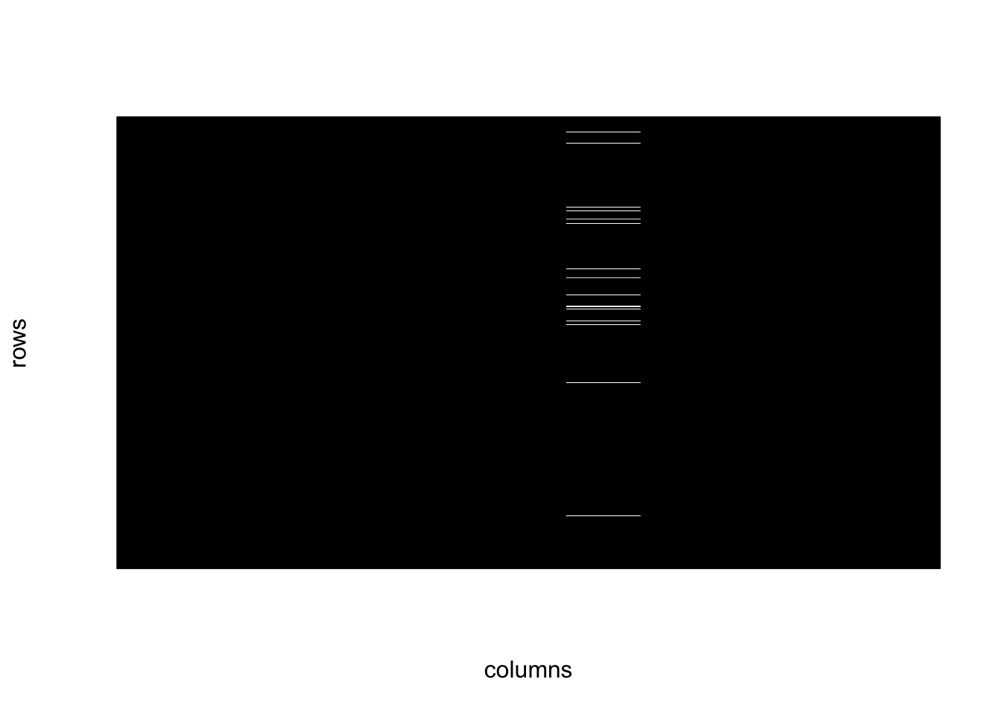
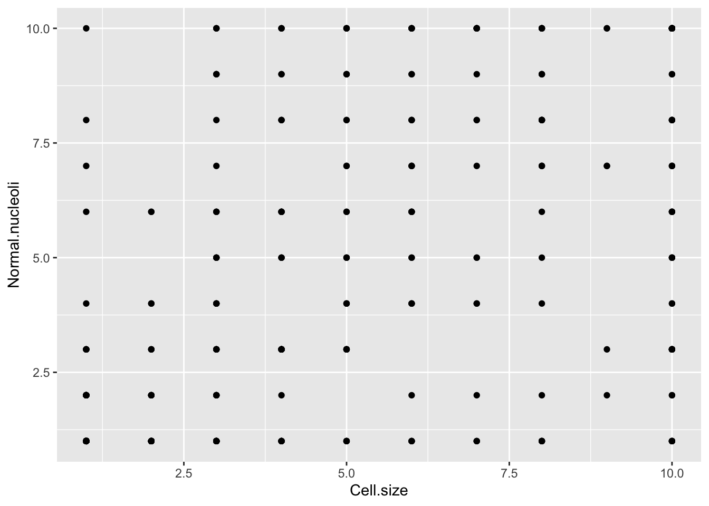
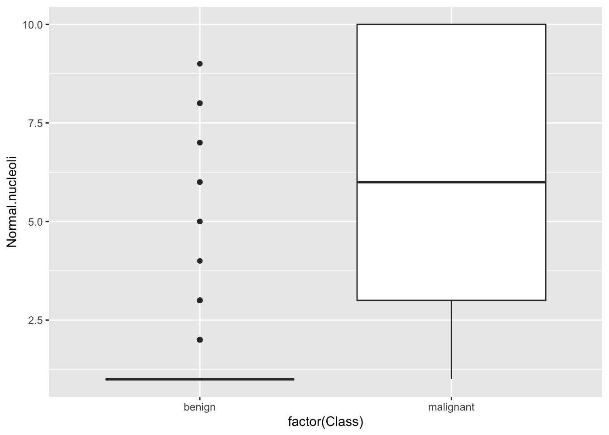
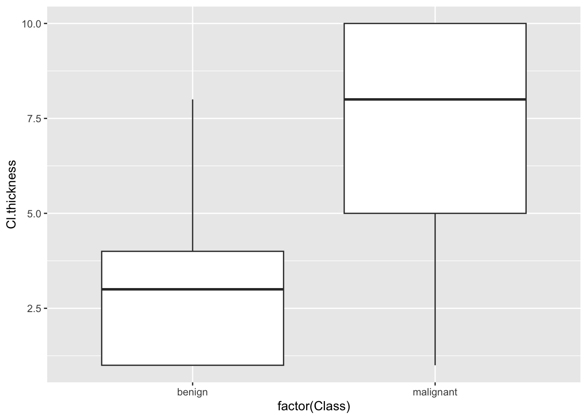
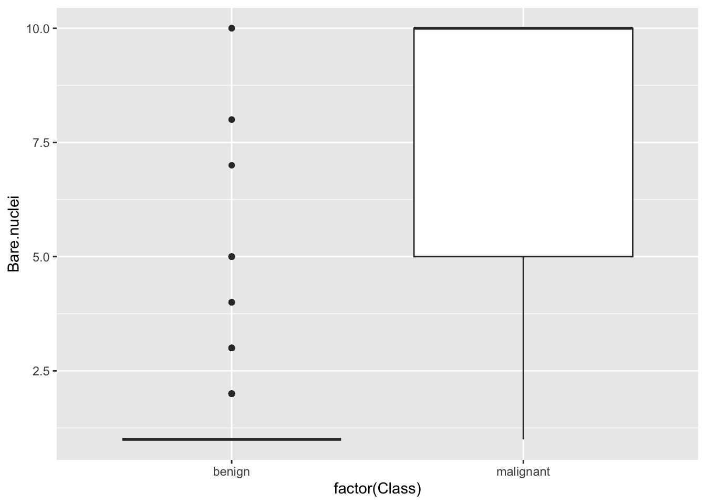

Module 3: Bonus Exercise Results
data(BreastCancer)
bc <- BreastCancer
for (k in 2:10) # altered for current lab
bc[,k] <- as.numeric(bc[,k])
head(bc)## Id Cl.thickness
## 1 1000025 5
## 2 1002945 5
## 3 1015425 3
## 4 1016277 6
## 5 1017023 4
## 6 1017122 8
## Cell.size Cell.shape
## 1 1 1
## 2 4 4
## 3 1 1
## 4 8 8
## 5 1 1
## 6 10 10
## Marg.adhesion Epith.c.size
## 1 1 2
## 2 5 7
## 3 1 2
## 4 1 3
## 5 3 2
## 6 8 7
## Bare.nuclei Bl.cromatin
## 1 1 3
## 2 10 3
## 3 2 3
## 4 4 3
## 5 1 3
## 6 10 9
## Normal.nucleoli Mitoses
## 1 1 1
## 2 2 1
## 3 1 1
## 4 7 1
## 5 1 1
## 6 7 1
## Class
## 1 benign
## 2 benign
## 3 benign
## 4 benign
## 5 benign
## 6 malignantExplore missingness:
suppressMessages(require(plotrix))
#' show data missingness as a chequered matrix
#'
#' @param x (matrix) data matrix.
#' @param outFile (char) path to file for printing graph
#' @param wd (numeric) width in inches
#' @param ht (numeric) height in inches
#' @return plots missingness matrix to file
#' @import plotrix
#' @export
plotMissMat <- function(x,xlab="columns",
ylab="rows",border=NA) {
x <- !is.na(x)
class(x) <- "numeric"
color2D.matplot(x,show.values=FALSE,axes=FALSE,
cs1=c(1,0),cs2=c(1,0),cs3=c(1,0),border=border,
cex=0.8,
xlab=xlab,ylab=ylab)
}Explore missingness:

## Id
## 0
## Cl.thickness
## 0
## Cell.size
## 0
## Cell.shape
## 0
## Marg.adhesion
## 0
## Epith.c.size
## 0
## Bare.nuclei
## 16
## Bl.cromatin
## 0
## Normal.nucleoli
## 0
## Mitoses
## 0
## Class
## 0Plot relationship between variables



## Warning: Removed 16 rows containing
## non-finite outside the scale
## range (`stat_boxplot()`).
Fit a binary outcome model:
mod <- glm(
Class ~ Cl.thickness + Bare.nuclei + Normal.nucleoli + Mitoses + Bl.cromatin,
bc,
family="binomial")
summary(mod)##
## Call:
## glm(formula = Class ~ Cl.thickness + Bare.nuclei + Normal.nucleoli +
## Mitoses + Bl.cromatin, family = "binomial", data = bc)
##
## Coefficients:
## Estimate
## (Intercept) -9.69635
## Cl.thickness 0.63413
## Bare.nuclei 0.50988
## Normal.nucleoli 0.35765
## Mitoses 0.52677
## Bl.cromatin 0.61398
## Std. Error
## (Intercept) 0.98763
## Cl.thickness 0.12267
## Bare.nuclei 0.08228
## Normal.nucleoli 0.10040
## Mitoses 0.27923
## Bl.cromatin 0.14225
## z value
## (Intercept) -9.818
## Cl.thickness 5.169
## Bare.nuclei 6.197
## Normal.nucleoli 3.562
## Mitoses 1.887
## Bl.cromatin 4.316
## Pr(>|z|)
## (Intercept) < 2e-16 ***
## Cl.thickness 2.35e-07 ***
## Bare.nuclei 5.76e-10 ***
## Normal.nucleoli 0.000368 ***
## Mitoses 0.059223 .
## Bl.cromatin 1.59e-05 ***
## ---
## Signif. codes:
## 0 '***' 0.001 '**' 0.01
## '*' 0.05 '.' 0.1 ' ' 1
##
## (Dispersion parameter for binomial family taken to be 1)
##
## Null deviance: 884.35 on 682 degrees of freedom
## Residual deviance: 120.81 on 677 degrees of freedom
## (16 observations deleted due to missingness)
## AIC: 132.81
##
## Number of Fisher Scoring iterations: 8